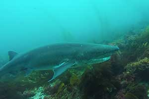
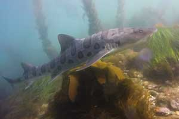
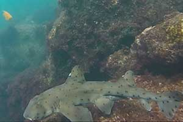
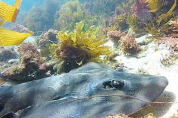

All about San Diego based sea life sharks here!
Did you know that sharks aren't all that bad - learn about the variety of sharks in San Diego waters
Seven Gill SharkWe are so fortunate to live so close to so many amazing varieties of sharks. Sharks have a bad rap - people are afraid of them and don't understand them. Just like all living things sharks play an important part of our ecosystem and help to keep the ocean in balance.
Leopard SharkSharks play a very important role in the oceans in a way that an average fish does not. Sharks are at the top of the food chain in virtually every part of every ocean. In that role, they keep populations of other fish healthy and in proper proportion for their ecosystem. The keep sea grass beds and other vital habitats healthy, keep prey populations healthy and keep food webs in balance.
Horn SharkWhere sharks are eliminated, the marine ecosystem loses its balance. In the parts of the ocean where sharks have been fished out of existence, we can see the dangerous result of removing the top predator from an ecosystem. The lesson is important. Sharks are being killed for their fins for shark fin soup, a food that has assumed cultural value but is not important for human survival or health. However, removing the sharks can result in the loss of important foods that we do depend upon for survival.
Banded Guitar SharkSharks have survived for 450 million years, but may be gone within the next decades. Life within the oceans, covering 2/3rds of our planet, has enjoyed a relationship with sharks for about 450 million years. Our growing demand for shark fin soup has increased the slaughter of sharks to such a great extent that many shark species are already nearing extinction.
What will the health of oceans be like when such an important group of animals have been destroyed? Do we want the destruction of sharks and the oceans to be the legacy we leave for our children?